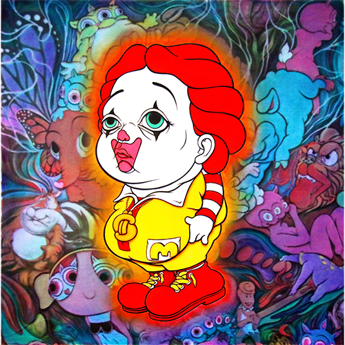
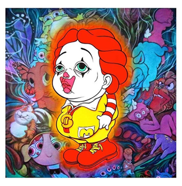

Exhibitions
YO’HOOD 2018, Shanghai World Expo Exhibition & Convention Center, Shanghai, China, August 31–September 2, 2018.
Delusionville, Allouche Gallery, New York, New York, US, October 11–November 25, 2018.
Notes
This composition was later adapted by the artist as a related lithograph.
The work references Ronald McDonald, Tony the Tiger, and Bubbles from The Powerpuff Girls.
Ancillary Documentation



Selected Online Circulation
Selected examples of the work’s online circulation, reproduction, reference documentation, or discussion. This list is not exhaustive; it is intended to document representative appearances and supporting source links beyond formal catalogue fields.